Always recording in memory.
Something great just played and you weren't recording? Save the last 15 minutes with one hotkey.
Recordr runs a rolling buffer of your system audio — no microphone, no re-recording, no "I wish I'd hit record". It captures the output of a specific device through WASAPI loopback, keeps it in RAM, and writes a file only when you ask. Everything stays on your machine.
Pre-alpha. The rolling buffer, the WASAPI loopback capture, the visualizers and the tray are all real and working; expect rough edges elsewhere, and expect to build from source until the first tagged release lands.
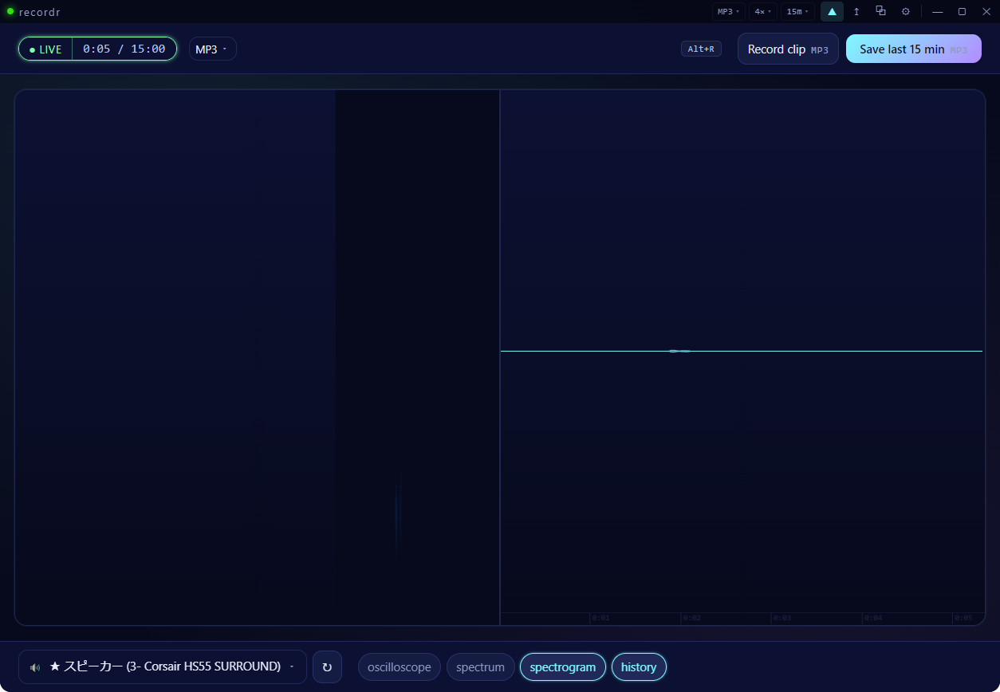
node scripts/theme-shots.mjs against a running build (see README).What it does
A recorder that assumes the interesting moment has already happened.
Pick a device, not a mic
Recordr captures your output: the speakers, the headset, a virtual cable. The WASAPI loopback backend grabs one output device at a time, so a browser tab, a game and a synth can be captured separately without the room, the fans or the neighbours.
It buffers continuously
The rolling buffer holds 1 minute up to 1 hour in memory (15 minutes by default). It never resets — it slides, so every moment has its own grace period from the second it played.
You save after the fact
Press Alt+R for a short clip, or hit Save to write the whole buffered window to disk. Traditional record-on/record-off mode is there too if you'd rather work that way.
For producers
Reference material, happy accidents and "what was that preset?" — without a second machine.
Drag the past into your DAW
The history view is a real timeline. Drag a selection out of it and it lands in Explorer as a WAV any DAW imports — Bitwig, FL Studio, Ableton. Slices are cut to the sample, not to the nearest frame.
Per-device loopback capture
A browser, a plugin, a game, a call — pick the output device and record just that, clean, at the source. No mic in the loop, no re-performing the part you liked.
MIDI out of it, if you want
Optional melody and chord transcription writes a .mid next to the audio, on a background worker so a save is never blocked. Off by default — it costs CPU time proportional to the clip.
A strip above your session
Dock Recordr across the top of the monitor and it can reserve the desktop space so nothing hides behind it — the same trick the taskbar uses. It's always-on-top, and it shrinks down to a couple of rows when you want it out of the way.
Features
Everything here runs locally. No account, no upload, no analytics.
Rolling buffer, 1 min → 1 hr
Configurable in one click from the title bar or the right-click menu; the HUD shows how much of the window is held.
Four visualizers
Oscilloscope, spectrum bars, a scrolling spectrogram, and the rolling history view you select and drag from. Split them side by side.
12 themes
Modern neon, classic green, cyberpunk, synthwave, monochrome, kawaii, aqua, sakura, lime, blood red, nocturnal, black ice.
WebM / WAV / MP3
Opus-in-WebM by default (small, widely supported), or encode to WAV/MP3 on save at a bitrate you choose.
Clip recorder
A dedicated record button — and a hotkey — that streams a short clip straight to disk with its own always-on-top timer window.
Two capture backends
WASAPI loopback for a specific output device, or Chromium's own screen/window picker when you want to follow a window.
Filename templates
Build the name you want from tokens — date, time, device, mode, counter — with clickable chips in Settings.
Tray that tells the truth
Live timer in the title, record state on the icon, recent saves one right-click away, and a recovery item for the desktop work area.
Always on top, single instance
Pinned above your DAW on any monitor, and a second launch focuses the running app instead of opening a duplicate.
12 themes, one recorder
Colour is a preference, not a feature you should pay for. Shots below are captured from a running build.
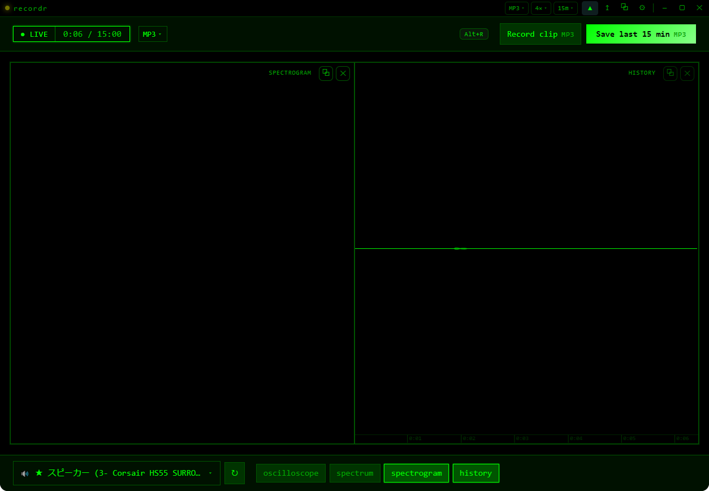
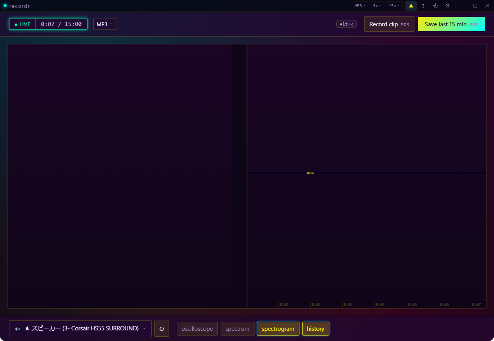
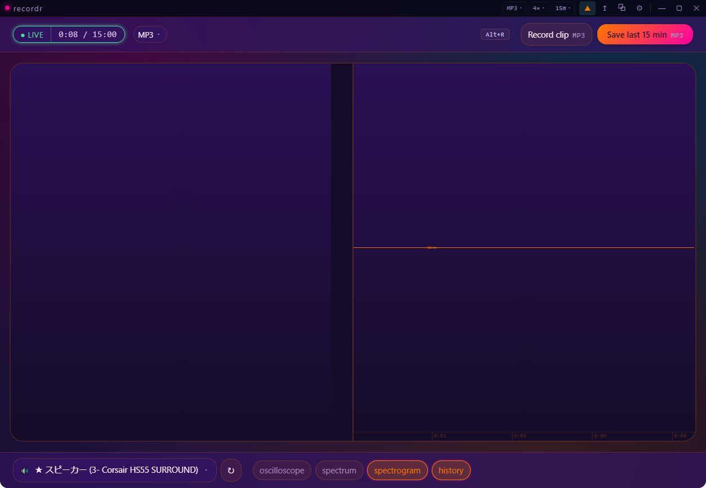
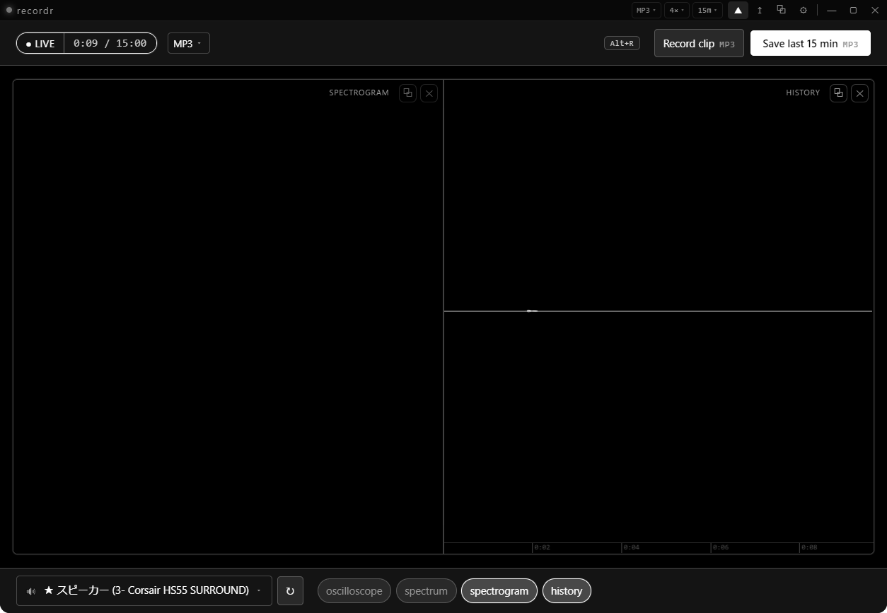
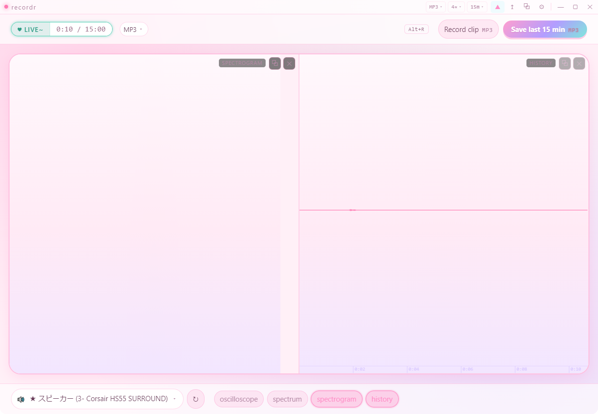
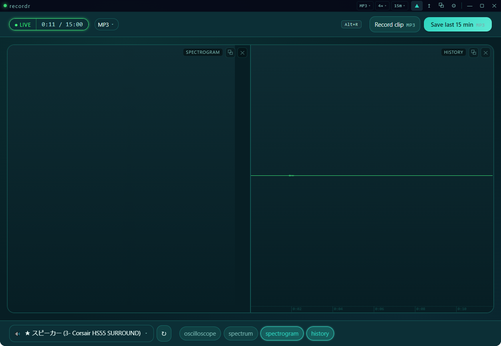
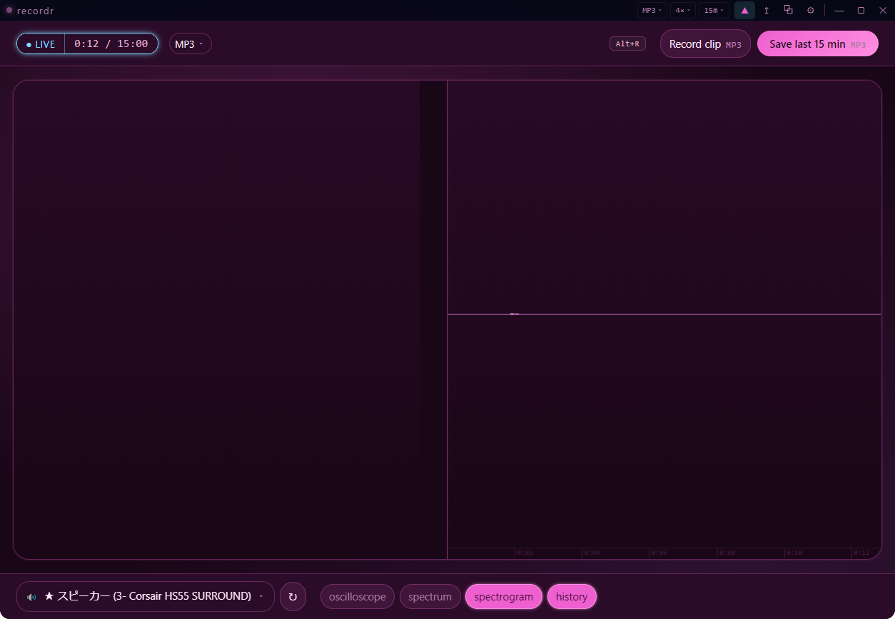
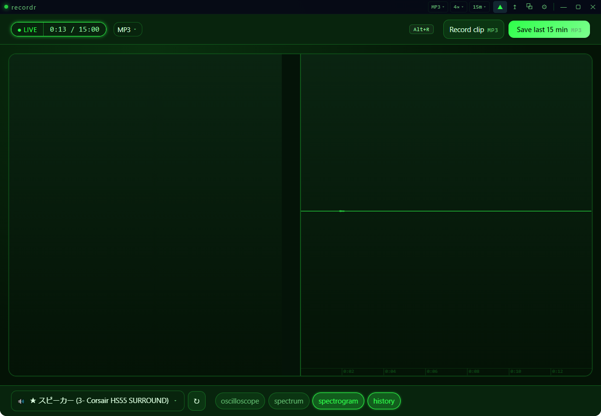
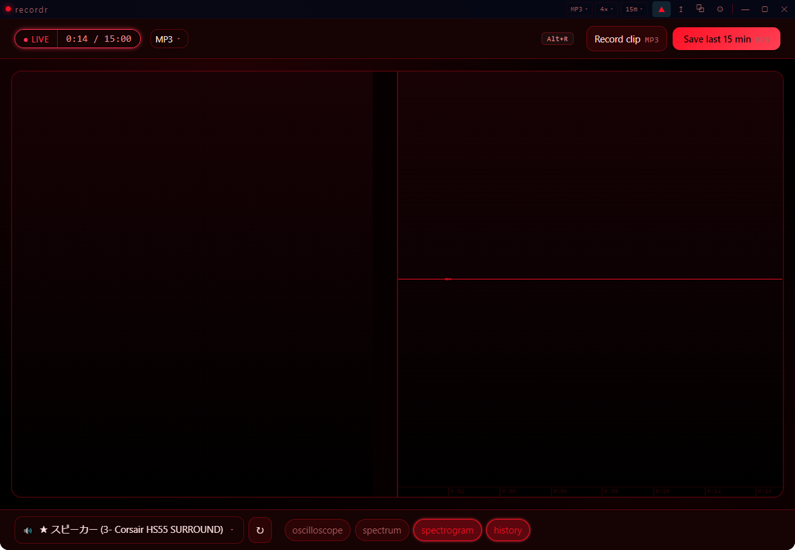
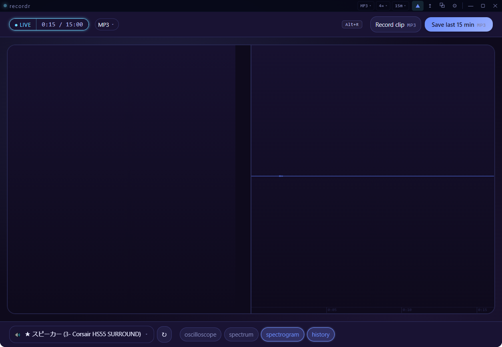
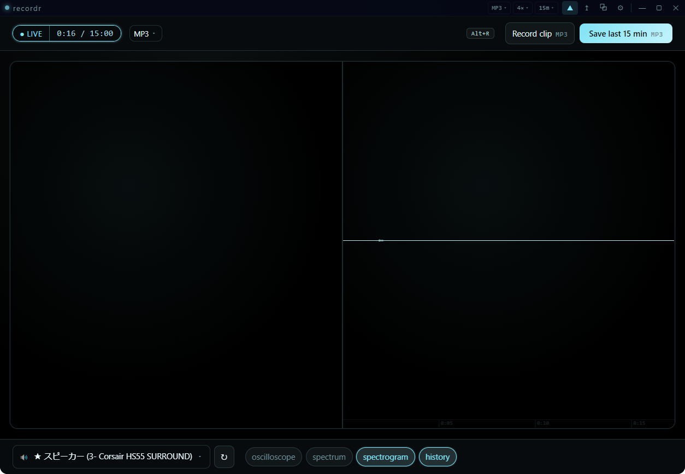
Download
Windows 10 or 11, 64-bit. One installer, no runtime to install first.
Installer
An NSIS Recordr Setup build, around 74 MB. It ships the WASAPI loopback helper with it, so there's no .NET SDK to install.
From source
Node 18+, then npm install and npm run dev. npm run package builds the installer.
Requirements
System-audio capture needs Windows; the app itself is Electron 30 with a small .NET 8 helper for the per-device loopback path.
Licence & price
What it costs, and what you're allowed to do with it.
Source
Recordr is a one-developer desktop app. The repository is the product: issues, source and release notes all live there.
Your audio
Recordings are written to the folder you choose and never leave your machine. There is no account, no telemetry, and no cloud component in the app.